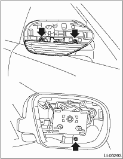
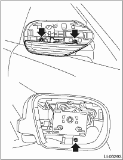

1. Disconnect the ground cable from the battery.
2. Remove the scalp cap. 
3. Remove the mirror.
4. Disconnect the harness connector, remove the 3 mounting screws and then remove the side turn signal light assembly.

LIGHTING SYSTEM > Side Turn Signal Light Assembly
1. Disconnect the ground cable from the battery.
2. Remove the scalp cap.
3. Remove the mirror.
4. Disconnect the harness connector, remove the 3 mounting screws and then remove the side turn signal light assembly.
